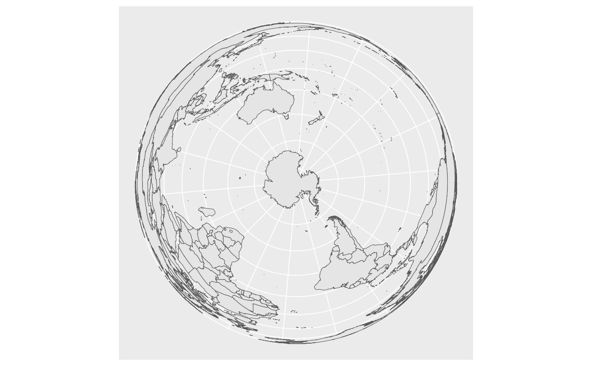
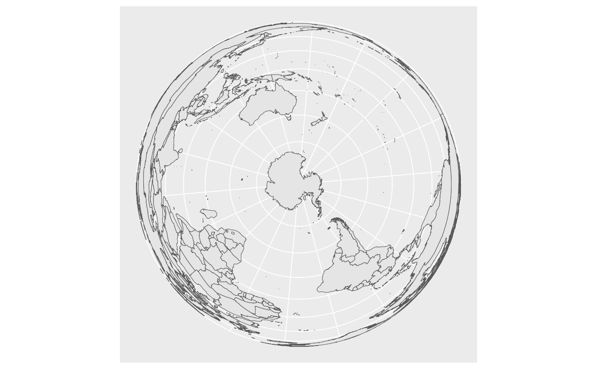

This set of geom, stat, and coord are used to visualise simple feature (sf)
objects. For simple plots, you will only need geom_sf() as it
uses stat_sf() and adds coord_sf() for you. geom_sf() is
an unusual geom because it will draw different geometric objects depending
on what simple features are present in the data: you can get points, lines,
or polygons.
For text and labels, you can use geom_sf_text() and geom_sf_label().
Usage
coord_sf(
xlim = NULL,
ylim = NULL,
expand = TRUE,
crs = NULL,
default_crs = NULL,
datum = sf::st_crs(4326),
label_graticule = waiver(),
label_axes = waiver(),
lims_method = "cross",
ndiscr = 100,
default = FALSE,
clip = "on"
)
geom_sf(
mapping = aes(),
data = NULL,
stat = "sf",
position = "identity",
na.rm = FALSE,
show.legend = NA,
inherit.aes = TRUE,
...
)
geom_sf_label(
mapping = aes(),
data = NULL,
stat = "sf_coordinates",
position = "identity",
...,
parse = FALSE,
nudge_x = 0,
nudge_y = 0,
label.padding = unit(0.25, "lines"),
label.r = unit(0.15, "lines"),
label.size = 0.25,
na.rm = FALSE,
show.legend = NA,
inherit.aes = TRUE,
fun.geometry = NULL
)
geom_sf_text(
mapping = aes(),
data = NULL,
stat = "sf_coordinates",
position = "identity",
...,
parse = FALSE,
nudge_x = 0,
nudge_y = 0,
check_overlap = FALSE,
na.rm = FALSE,
show.legend = NA,
inherit.aes = TRUE,
fun.geometry = NULL
)
stat_sf(
mapping = NULL,
data = NULL,
geom = "rect",
position = "identity",
na.rm = FALSE,
show.legend = NA,
inherit.aes = TRUE,
...
)Arguments
- xlim, ylim
Limits for the x and y axes. These limits are specified in the units of the default CRS. By default, this means projected coordinates (
default_crs = NULL). How limit specifications translate into the exact region shown on the plot can be confusing when non-linear or rotated coordinate systems are used as the default crs. First, different methods can be preferable under different conditions. See parameterlims_methodfor details. Second, specifying limits along only one direction can affect the automatically generated limits along the other direction. Therefore, it is best to always specify limits for both x and y. Third, specifying limits via position scales orxlim()/ylim()is strongly discouraged, as it can result in data points being dropped from the plot even though they would be visible in the final plot region.- expand
If
TRUE, the default, adds a small expansion factor to the limits to ensure that data and axes don't overlap. IfFALSE, limits are taken exactly from the data orxlim/ylim. Giving a logical vector will separately control the expansion for the four directions (top, left, bottom and right). Theexpandargument will be recycled to length 4 if necessary. Alternatively, can be a named logical vector to control a single direction, e.g.expand = c(bottom = FALSE).- crs
The coordinate reference system (CRS) into which all data should be projected before plotting. If not specified, will use the CRS defined in the first sf layer of the plot.
- default_crs
The default CRS to be used for non-sf layers (which don't carry any CRS information) and scale limits. The default value of
NULLmeans that the setting forcrsis used. This implies that all non-sf layers and scale limits are assumed to be specified in projected coordinates. A useful alternative setting isdefault_crs = sf::st_crs(4326), which means x and y positions are interpreted as longitude and latitude, respectively, in the World Geodetic System 1984 (WGS84).- datum
CRS that provides datum to use when generating graticules.
- label_graticule
Character vector indicating which graticule lines should be labeled where. Meridians run north-south, and the letters
"N"and"S"indicate that they should be labeled on their north or south end points, respectively. Parallels run east-west, and the letters"E"and"W"indicate that they should be labeled on their east or west end points, respectively. Thus,label_graticule = "SW"would label meridians at their south end and parallels at their west end, whereaslabel_graticule = "EW"would label parallels at both ends and meridians not at all. Because meridians and parallels can in general intersect with any side of the plot panel, for any choice oflabel_graticulelabels are not guaranteed to reside on only one particular side of the plot panel. Also,label_graticulecan cause labeling artifacts, in particular if a graticule line coincides with the edge of the plot panel. In such circumstances,label_axeswill generally yield better results and should be used instead.This parameter can be used alone or in combination with
label_axes.- label_axes
Character vector or named list of character values specifying which graticule lines (meridians or parallels) should be labeled on which side of the plot. Meridians are indicated by
"E"(for East) and parallels by"N"(for North). Default is"--EN", which specifies (clockwise from the top) no labels on the top, none on the right, meridians on the bottom, and parallels on the left. Alternatively, this setting could have been specified withlist(bottom = "E", left = "N").This parameter can be used alone or in combination with
label_graticule.- lims_method
Method specifying how scale limits are converted into limits on the plot region. Has no effect when
default_crs = NULL. For a very non-linear CRS (e.g., a perspective centered around the North pole), the available methods yield widely differing results, and you may want to try various options. Methods currently implemented include"cross"(the default),"box","orthogonal", and"geometry_bbox". For method"cross", limits along one direction (e.g., longitude) are applied at the midpoint of the other direction (e.g., latitude). This method avoids excessively large limits for rotated coordinate systems but means that sometimes limits need to be expanded a little further if extreme data points are to be included in the final plot region. By contrast, for method"box", a box is generated out of the limits along both directions, and then limits in projected coordinates are chosen such that the entire box is visible. This method can yield plot regions that are too large. Finally, method"orthogonal"applies limits separately along each axis, and method"geometry_bbox"ignores all limit information except the bounding boxes of any objects in thegeometryaesthetic.- ndiscr
Number of segments to use for discretising graticule lines; try increasing this number when graticules look incorrect.
- default
Is this the default coordinate system? If
FALSE(the default), then replacing this coordinate system with another one creates a message alerting the user that the coordinate system is being replaced. IfTRUE, that warning is suppressed.- clip
Should drawing be clipped to the extent of the plot panel? A setting of
"on"(the default) means yes, and a setting of"off"means no. In most cases, the default of"on"should not be changed, as settingclip = "off"can cause unexpected results. It allows drawing of data points anywhere on the plot, including in the plot margins. If limits are set viaxlimandylimand some data points fall outside those limits, then those data points may show up in places such as the axes, the legend, the plot title, or the plot margins.- mapping
Set of aesthetic mappings created by
aes(). If specified andinherit.aes = TRUE(the default), it is combined with the default mapping at the top level of the plot. You must supplymappingif there is no plot mapping.- data
The data to be displayed in this layer. There are three options:
If
NULL, the default, the data is inherited from the plot data as specified in the call toggplot().A
data.frame, or other object, will override the plot data. All objects will be fortified to produce a data frame. Seefortify()for which variables will be created.A
functionwill be called with a single argument, the plot data. The return value must be adata.frame, and will be used as the layer data. Afunctioncan be created from aformula(e.g.~ head(.x, 10)).- stat
The statistical transformation to use on the data for this layer. When using a
geom_*()function to construct a layer, thestatargument can be used to override the default coupling between geoms and stats. Thestatargument accepts the following:A
Statggproto subclass, for exampleStatCount.A string naming the stat. To give the stat as a string, strip the function name of the
stat_prefix. For example, to usestat_count(), give the stat as"count".For more information and other ways to specify the stat, see the layer stat documentation.
- position
A position adjustment to use on the data for this layer. This can be used in various ways, including to prevent overplotting and improving the display. The
positionargument accepts the following:The result of calling a position function, such as
position_jitter(). This method allows for passing extra arguments to the position.A string naming the position adjustment. To give the position as a string, strip the function name of the
position_prefix. For example, to useposition_jitter(), give the position as"jitter".For more information and other ways to specify the position, see the layer position documentation.
- na.rm
If
FALSE, the default, missing values are removed with a warning. IfTRUE, missing values are silently removed.- show.legend
logical. Should this layer be included in the legends?
NA, the default, includes if any aesthetics are mapped.FALSEnever includes, andTRUEalways includes.You can also set this to one of "polygon", "line", and "point" to override the default legend.
- inherit.aes
If
FALSE, overrides the default aesthetics, rather than combining with them. This is most useful for helper functions that define both data and aesthetics and shouldn't inherit behaviour from the default plot specification, e.g.borders().- ...
Other arguments passed on to
layer()'sparamsargument. These arguments broadly fall into one of 4 categories below. Notably, further arguments to thepositionargument, or aesthetics that are required can not be passed through.... Unknown arguments that are not part of the 4 categories below are ignored.Static aesthetics that are not mapped to a scale, but are at a fixed value and apply to the layer as a whole. For example,
colour = "red"orlinewidth = 3. The geom's documentation has an Aesthetics section that lists the available options. The 'required' aesthetics cannot be passed on to theparams. Please note that while passing unmapped aesthetics as vectors is technically possible, the order and required length is not guaranteed to be parallel to the input data.When constructing a layer using a
stat_*()function, the...argument can be used to pass on parameters to thegeompart of the layer. An example of this isstat_density(geom = "area", outline.type = "both"). The geom's documentation lists which parameters it can accept.Inversely, when constructing a layer using a
geom_*()function, the...argument can be used to pass on parameters to thestatpart of the layer. An example of this isgeom_area(stat = "density", adjust = 0.5). The stat's documentation lists which parameters it can accept.The
key_glyphargument oflayer()may also be passed on through.... This can be one of the functions described as key glyphs, to change the display of the layer in the legend.
- parse
If
TRUE, the labels will be parsed into expressions and displayed as described in?plotmath.- nudge_x, nudge_y
Horizontal and vertical adjustment to nudge labels by. Useful for offsetting text from points, particularly on discrete scales. Cannot be jointly specified with
position.- label.padding
Amount of padding around label. Defaults to 0.25 lines.
- label.r
Radius of rounded corners. Defaults to 0.15 lines.
- label.size
Size of label border, in mm.
- fun.geometry
A function that takes a
sfcobject and returns asfc_POINTwith the same length as the input. IfNULL,function(x) sf::st_point_on_surface(sf::st_zm(x))will be used. Note that the function may warn about the incorrectness of the result if the data is not projected, but you can ignore this except when you really care about the exact locations.- check_overlap
If
TRUE, text that overlaps previous text in the same layer will not be plotted.check_overlaphappens at draw time and in the order of the data. Therefore data should be arranged by the label column before callinggeom_text(). Note that this argument is not supported bygeom_label().- geom
The geometric object to use to display the data for this layer. When using a
stat_*()function to construct a layer, thegeomargument can be used to override the default coupling between stats and geoms. Thegeomargument accepts the following:A
Geomggproto subclass, for exampleGeomPoint.A string naming the geom. To give the geom as a string, strip the function name of the
geom_prefix. For example, to usegeom_point(), give the geom as"point".For more information and other ways to specify the geom, see the layer geom documentation.
Geometry aesthetic
geom_sf() uses a unique aesthetic: geometry, giving an
column of class sfc containing simple features data. There
are three ways to supply the geometry aesthetic:
Do nothing: by default
geom_sf()assumes it is stored in thegeometrycolumn.Explicitly pass an
sfobject to thedataargument. This will use the primary geometry column, no matter what it's called.Supply your own using
aes(geometry = my_column)
Unlike other aesthetics, geometry will never be inherited from
the plot.
CRS
coord_sf() ensures that all layers use a common CRS. You can
either specify it using the crs param, or coord_sf() will
take it from the first layer that defines a CRS.
Combining sf layers and regular geoms
Most regular geoms, such as geom_point(), geom_path(),
geom_text(), geom_polygon() etc. will work fine with coord_sf(). However
when using these geoms, two problems arise. First, what CRS should be used
for the x and y coordinates used by these non-sf geoms? The CRS applied to
non-sf geoms is set by the default_crs parameter, and it defaults to
NULL, which means positions for non-sf geoms are interpreted as projected
coordinates in the coordinate system set by the crs parameter. This setting
allows you complete control over where exactly items are placed on the plot
canvas, but it may require some understanding of how projections work and how
to generate data in projected coordinates. As an alternative, you can set
default_crs = sf::st_crs(4326), the World Geodetic System 1984 (WGS84).
This means that x and y positions are interpreted as longitude and latitude,
respectively. You can also specify any other valid CRS as the default CRS for
non-sf geoms.
The second problem that arises for non-sf geoms is how straight lines
should be interpreted in projected space when default_crs is not set to NULL.
The approach coord_sf() takes is to break straight lines into small pieces
(i.e., segmentize them) and then transform the pieces into projected coordinates.
For the default setting where x and y are interpreted as longitude and latitude,
this approach means that horizontal lines follow the parallels and vertical lines
follow the meridians. If you need a different approach to handling straight lines,
then you should manually segmentize and project coordinates and generate the plot
in projected coordinates.
See also
The simple feature maps section of the online ggplot2 book.
Examples
if (requireNamespace("sf", quietly = TRUE)) {
nc <- sf::st_read(system.file("shape/nc.shp", package = "sf"), quiet = TRUE)
ggplot(nc) +
geom_sf(aes(fill = AREA))
# If not supplied, coord_sf() will take the CRS from the first layer
# and automatically transform all other layers to use that CRS. This
# ensures that all data will correctly line up
nc_3857 <- sf::st_transform(nc, 3857)
ggplot() +
geom_sf(data = nc) +
geom_sf(data = nc_3857, colour = "red", fill = NA)
# Unfortunately if you plot other types of feature you'll need to use
# show.legend to tell ggplot2 what type of legend to use
nc_3857$mid <- sf::st_centroid(nc_3857$geometry)
ggplot(nc_3857) +
geom_sf(colour = "white") +
geom_sf(aes(geometry = mid, size = AREA), show.legend = "point")
# You can also use layers with x and y aesthetics. To have these interpreted
# as longitude/latitude you need to set the default CRS in coord_sf()
ggplot(nc_3857) +
geom_sf() +
annotate("point", x = -80, y = 35, colour = "red", size = 4) +
coord_sf(default_crs = sf::st_crs(4326))
# To add labels, use geom_sf_label().
ggplot(nc_3857[1:3, ]) +
geom_sf(aes(fill = AREA)) +
geom_sf_label(aes(label = NAME))
}
 # Thanks to the power of sf, a geom_sf nicely handles varying projections
# setting the aspect ratio correctly.
if (requireNamespace('maps', quietly = TRUE)) {
library(maps)
world1 <- sf::st_as_sf(map('world', plot = FALSE, fill = TRUE))
ggplot() + geom_sf(data = world1)
world2 <- sf::st_transform(
world1,
"+proj=laea +y_0=0 +lon_0=155 +lat_0=-90 +ellps=WGS84 +no_defs"
)
ggplot() + geom_sf(data = world2)
}

# Thanks to the power of sf, a geom_sf nicely handles varying projections
# setting the aspect ratio correctly.
if (requireNamespace('maps', quietly = TRUE)) {
library(maps)
world1 <- sf::st_as_sf(map('world', plot = FALSE, fill = TRUE))
ggplot() + geom_sf(data = world1)
world2 <- sf::st_transform(
world1,
"+proj=laea +y_0=0 +lon_0=155 +lat_0=-90 +ellps=WGS84 +no_defs"
)
ggplot() + geom_sf(data = world2)
}
